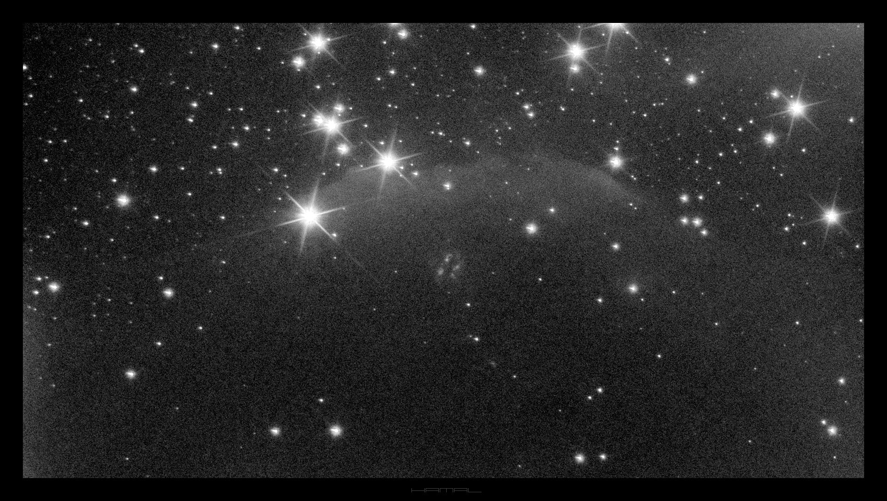
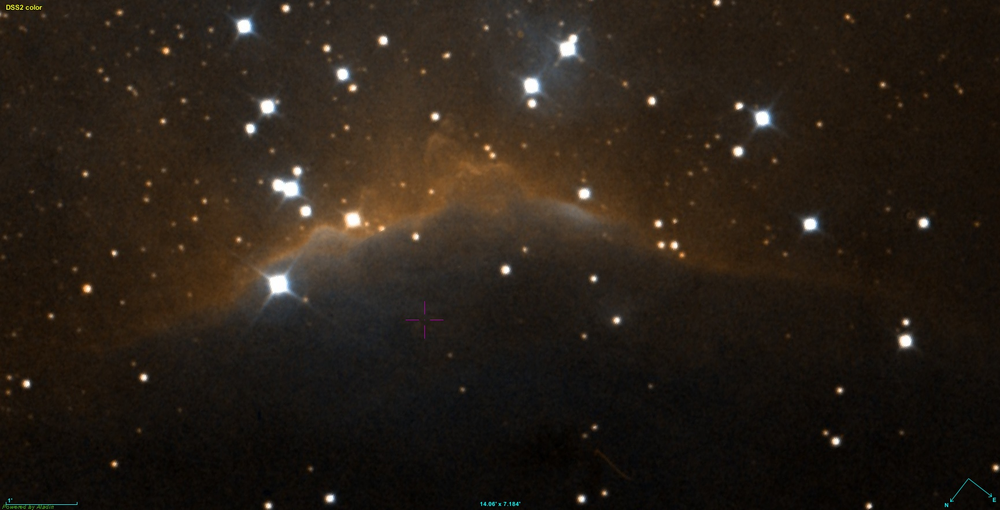
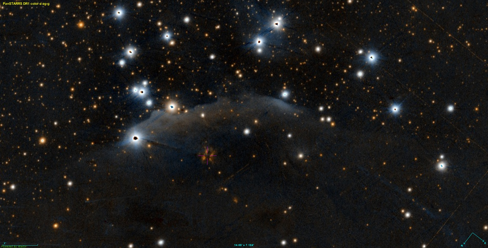
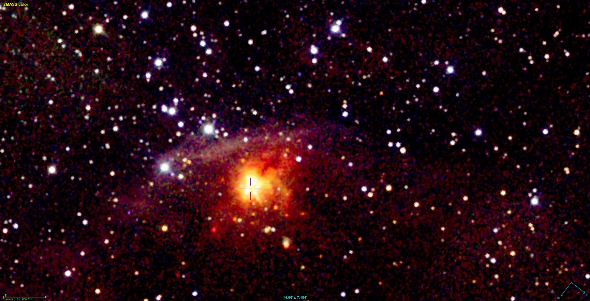

|
Infrared Deep Sky NIR High Resolution Astrophotography  WB89-171 (Wouterloot+Brand 1989) - Infra-Red source - The nebula in infrared light (685nm-1100nm) - Constellation Cepheus For comparison, the Sh2-140 nebula in visible light
Visible and Infrared light - comparison Ref. DSS (400nm-600nm)  Ref. PanSTARRS DR1 (400nm-1000nm)  Ref. 2MASS (1230nm-2160nm)  |
||||||||||